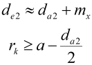

|
|
|


外径与喉部半径
您指定外径 de2 和喉部半径 rk 的值应按DIN 3975-1:2017-09 规定。根据公式 (59) 和 (67)，为这两个尺寸建议以下值：

其中：
da2: 齿顶圆直径
mx：轴向模数
a: 中心距
English Original
External diameter and throat radius
You specify values for the external diameter de2 and throat radius rk as specified in DIN 3975-1:2017-09. According to equation (59) and (67) the following values are suggested for these two dimensions:
with:
da2: Tip diameter
mx: Axial module
a: Center distance